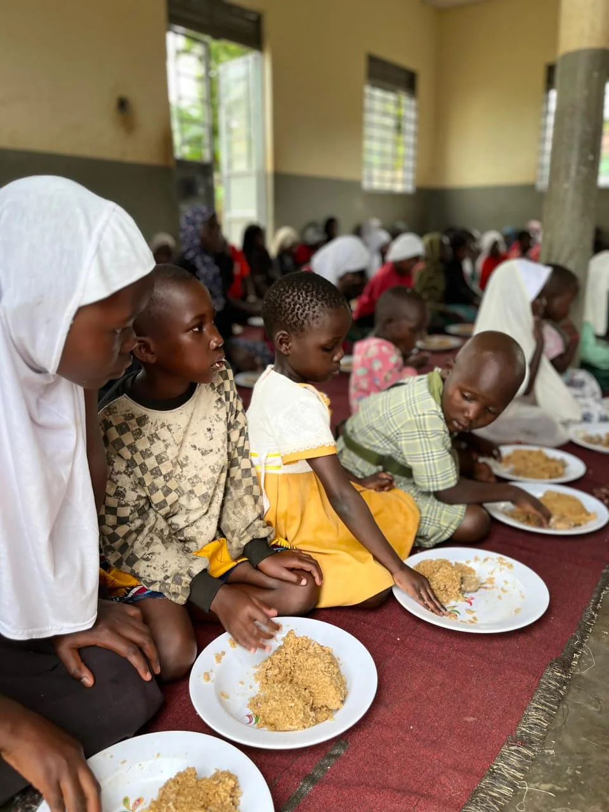
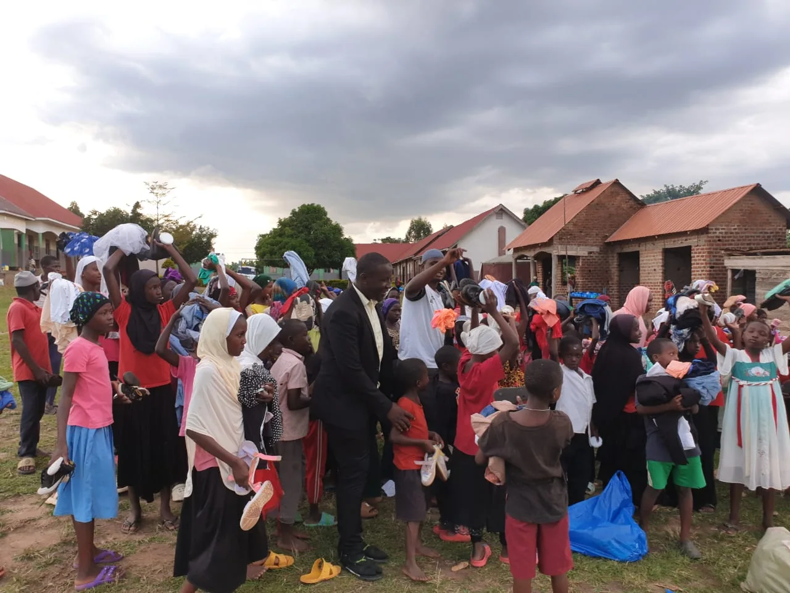
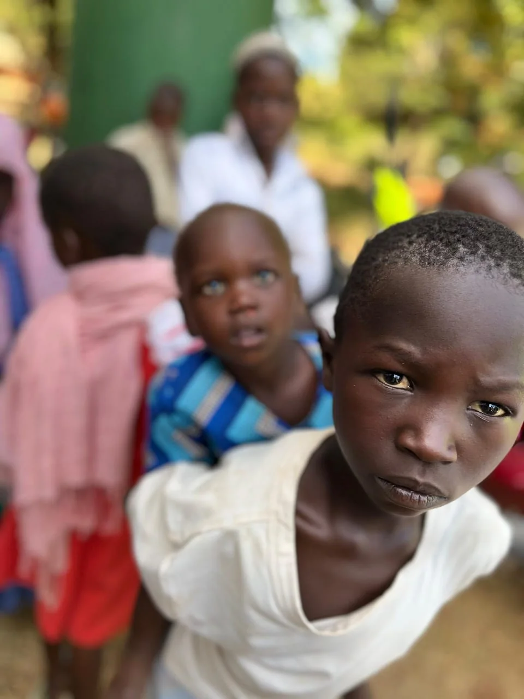
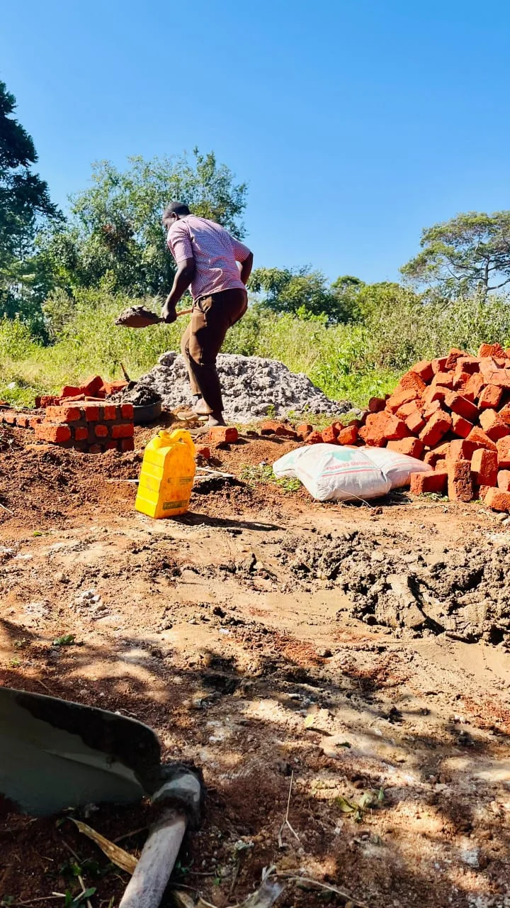
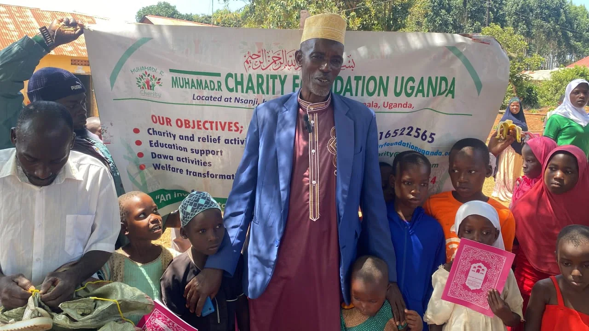
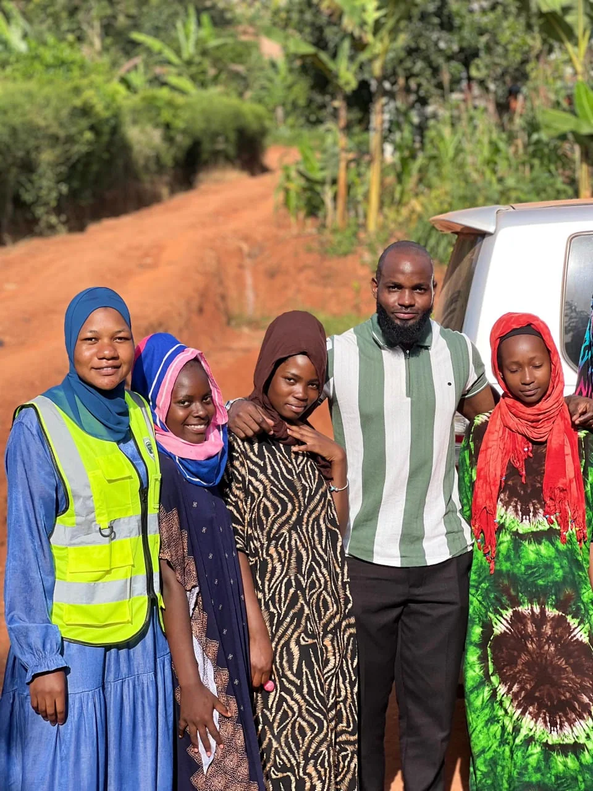

Focus area
Food & Essential Support
Responding to practical needs with care, respect and community participation.
Explore focus area
We are committed to community-centered support that protects dignity, responds to practical needs and helps people move forward with hope.


Muhamadi R Charity Foundation Uganda works from a simple conviction: practical support is most meaningful when it protects dignity and responds to the realities people face.
The supplied field photographs show community gatherings, food and essential support, outreach and people working together. The website therefore presents the organization through a broad, factually safe lens rather than inventing projects, partnerships or achievements that have not yet been documented.
Broad areas of work reflected in the supplied materials. Exact program names, locations and objectives can be refined as official information is added.

Responding to practical needs with care, respect and community participation.
Explore focus areaKeeping children and families visible within community-centered support efforts.
Explore focus area
Connecting with people where they are and creating space for shared action.
Explore focus area
Supporting practical, community-led efforts that can contribute to stronger local resilience.
Explore focus area
From gatherings and outreach to practical assistance, the supplied photographs show people coming together around shared needs and shared humanity.


A clear framework for turning compassion into practical community support.
Understand the needs and priorities people identify.
Bring people, resources and relationships together.
Deliver practical support with dignity and care.
Create room for participation, agency and local action.
Document what works and improve future support.
Service becomes meaningful when people are treated not as numbers, but as neighbors whose dignity matters.
Whether you want to support a community initiative, volunteer time, explore a partnership or simply help amplify the mission, start the conversation.
Use the contact page to start a conversation. Donation details, official addresses and verified organizational information can be added as they become available.